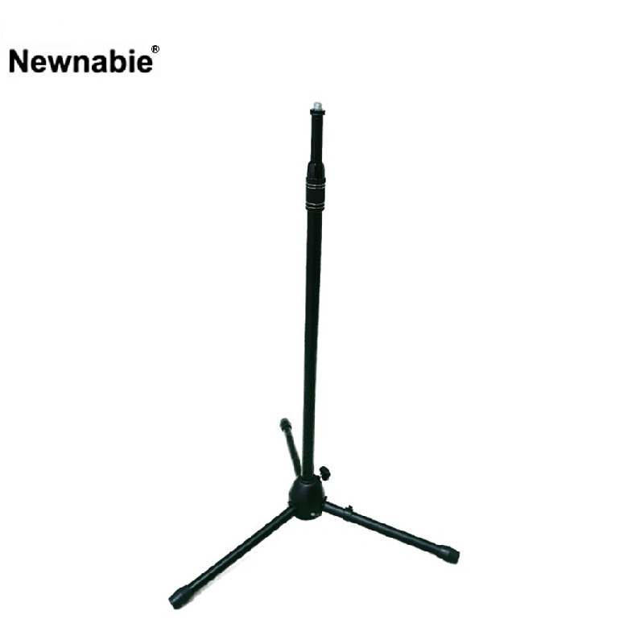

Newnabie NB-752I는 상단에 T-Bar(붐)가 없는 일자(I형) 직립 마이크 스탠드의 헤비듀티 버전입니다. 보컬 손잡이 마이크 홀더를 곧바로 꽂아 사용하는 직립 스탠드 구조로, 공연·인터뷰·녹음 등 붐 조정이 필요 없는 환경에서 가장 간단하고 견고한 선택지입니다.

T-Bar(붐) 없는 일자 직립 구조의 헤비듀티 마이크 스탠드. 손잡이 마이크를 곧장 꽂아 쓰는 환경에 최적화된 견고한 I형 모델입니다.
NB-752I는 NB-752S의 형제 모델로, 상단 T-Bar(붐)가 없는 I형 직립 스탠드입니다. 보컬 · 인터뷰처럼 마이크를 정면에 세워 두는 용도에서는 굳이 붐 구조가 필요 없기 때문에, T-Bar 없이도 간결하고 견고한 I형 스탠드가 오히려 더 선호됩니다.
Heavy-Duty 등급의 두꺼운 스틸 메인 폴과 넓은 베이스 트라이포드 다리로, 공연 중 발에 걸려도 쉽게 넘어지지 않는 안정성을 확보합니다. 900–1600 mm의 높이 범위는 일반 선 자세 보컬 포지션을 폭넓게 커버합니다.
| 모델명 | NB-752I (I 타입 · T-Bar 없음) |
|---|---|
| 타입 | Straight Mic Stand (Heavy-Duty) |
| Height | 900 – 1600 mm |
| T-Bar | 없음 (I형 직립) |
| Material | Steel |
| 권장소비자가 | 55,000 원 / 개 (VAT 포함) |
※ 본 사양 · 단가는 수입원(현대에이브이씨) 2026-01-01 스탠드 가격표 기준입니다. 'I' 접미사는 상단에 T-Bar(붐)가 없는 일자 직립 스탠드를 의미합니다.